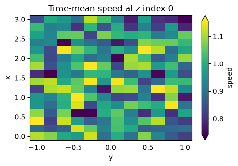
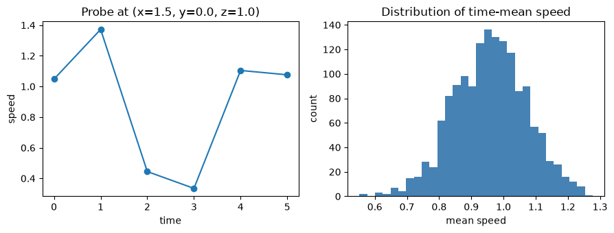

Practical Examples: Batch Conversion, Probes, and Plots#
This notebook collects three common post-processing recipes built on top of the
xarray_binfile.tutorial helpers:
convert every file in a directory from
float64tofloat32and save the result to another directoryextract a time series at a fixed point (a probe) and export it to CSV
draw quick exploration plots with matplotlib
All input files are synthesized on the fly with DatasetGenerator, so the notebook is self-contained and reproducible.
Note
These recipes reuse the shipped FileSpecsGetter convention
({name}-{digits:04}.bin). For a different on-disk layout, provide your own
read/write getters as shown in
Spec getter protocols.
import pathlib
import tempfile
import matplotlib.pyplot as plt
import numpy as np
import pandas as pd
import xarray as xr
import xarray_binfile # noqa: F401 (registers the .binary_engine accessors)
from xarray_binfile.tutorial import DatasetGenerator, FileSpecsGetter
source_directory_holder = tempfile.TemporaryDirectory()
float32_directory_holder = tempfile.TemporaryDirectory()
csv_directory_holder = tempfile.TemporaryDirectory()
source_directory = pathlib.Path(source_directory_holder.name)
float32_directory = pathlib.Path(float32_directory_holder.name)
csv_directory = pathlib.Path(csv_directory_holder.name)
source_directory
PosixPath('/tmp/tmpex81j8f5')
Generate example data#
The source dataset uses float64 values on a small 3D grid, stored as one file per variable and timestep. This mimics a typical simulation output directory.
base_coords = {
"x": np.linspace(0.0, 3.0, num=16, dtype=np.float32),
"y": np.linspace(-1.0, 1.0, num=12, dtype=np.float32),
"z": np.linspace(0.0, 2.0, num=8, dtype=np.float32),
}
reader_float64 = FileSpecsGetter(base_coords=base_coords, dtype=np.float64)
dataset_generator = DatasetGenerator(reader_float64.reader)
filenames = (
reader_float64.filename_template.format(name=name, digits=step)
for name in ("ux", "uy", "uz")
for step in range(6)
)
source_dataset = dataset_generator(map(pathlib.Path, filenames))
source_dataset.binary_engine.to_file(reader_float64.writer, source_directory)
sorted(path.name for path in source_directory.glob("*.bin"))[:6]
['ux-0000.bin',
'ux-0001.bin',
'ux-0002.bin',
'ux-0003.bin',
'ux-0004.bin',
'ux-0005.bin']
1. Batch-convert every file from float64 to float32#
Halving the on-disk word size is a common way to shrink large binary outputs when single precision is enough. Because the raw files carry no dtype information, we read them with a float64 getter, cast each variable to float32, and write the result into a separate directory.
reader_float32 = FileSpecsGetter(base_coords=base_coords, dtype=np.float32)
for path in sorted(source_directory.glob("*.bin")):
single = xr.open_dataset(
path, engine="binfile", read_specs_getter=reader_float64.reader
)
name = next(iter(single.data_vars))
single[name].astype(np.float32).binary_engine.to_file(
reader_float32.writer, float32_directory
)
sorted(path.name for path in float32_directory.glob("*.bin"))[:6]
['ux-0000.bin',
'ux-0001.bin',
'ux-0002.bin',
'ux-0003.bin',
'ux-0004.bin',
'ux-0005.bin']
The converted directory keeps the same file names, but each file is half the size. Reading it back requires a getter that declares float32; using the wrong dtype would silently misinterpret the bytes.
original_bytes = sum(p.stat().st_size for p in source_directory.glob("*.bin"))
converted_bytes = sum(p.stat().st_size for p in float32_directory.glob("*.bin"))
ratio = converted_bytes / original_bytes
print(f"on-disk size: {original_bytes} B -> {converted_bytes} B ({ratio:.0%})")
converted_dataset = xr.open_mfdataset(
sorted(float32_directory.glob("*.bin")),
engine="binfile",
read_specs_getter=reader_float32.reader,
chunks={"time": 2},
parallel=True,
)
xr.testing.assert_allclose(
converted_dataset.compute(), source_dataset.astype(np.float32)
)
print("dtype:", converted_dataset["ux"].dtype, "| round-trip matches source")
on-disk size: 221184 B -> 110592 B (50%)
dtype: float32 | round-trip matches source
2. Extract a probe time series and export to CSV#
A probe samples one grid point across every timestep. We open the whole collection lazily, build a derived speed field, select the point nearest to a target location, and export the resulting time series with pandas.
lazy_dataset = xr.open_mfdataset(
sorted(source_directory.glob("*.bin")),
engine="binfile",
read_specs_getter=reader_float64.reader,
chunks={"x": 8, "y": 6, "z": 4, "time": 2},
parallel=True,
)
speed = np.sqrt(
lazy_dataset["ux"] ** 2 + lazy_dataset["uy"] ** 2 + lazy_dataset["uz"] ** 2
).rename("speed")
probe = speed.sel(x=1.5, y=0.0, z=1.0, method="nearest").compute()
probe
<xarray.DataArray 'speed' (time: 6)> Size: 48B
array([1.04787615, 1.37214209, 0.44474456, 0.33486995, 1.10443433,
1.07600751])
Coordinates:
* time (time) int64 48B 0 1 2 3 4 5
x float32 4B 1.6
y float32 4B 0.09091
z float32 4B 0.8571csv_path = csv_directory / "probe_speed.csv"
probe.to_dataframe().to_csv(csv_path)
pd.read_csv(csv_path).head()
| time | x | y | z | speed | |
|---|---|---|---|---|---|
| 0 | 0 | 1.6 | 0.090909 | 0.857143 | 1.047876 |
| 1 | 1 | 1.6 | 0.090909 | 0.857143 | 1.372142 |
| 2 | 2 | 1.6 | 0.090909 | 0.857143 | 0.444745 |
| 3 | 3 | 1.6 | 0.090909 | 0.857143 | 0.334870 |
| 4 | 4 | 1.6 | 0.090909 | 0.857143 | 1.104434 |
3. Quick exploration plots with matplotlib#
xarray’s .plot() helpers draw straight onto matplotlib axes, so you can mix them with plain matplotlib calls. First, a time-averaged horizontal slice of the speed field:
mean_speed = speed.mean("time").compute()
fig, ax = plt.subplots(figsize=(5, 3.5))
mean_speed.isel(z=0).plot(ax=ax, cmap="viridis", robust=True)
ax.set_title("Time-mean speed at z index 0")
fig.tight_layout()
plt.show()

Next, the probe time series and the distribution of the mean-speed field side by side, using matplotlib directly:
fig, (ax_line, ax_hist) = plt.subplots(1, 2, figsize=(9, 3.5))
ax_line.plot(probe["time"], probe.values, marker="o")
ax_line.set_xlabel("time")
ax_line.set_ylabel("speed")
ax_line.set_title("Probe at (x=1.5, y=0.0, z=1.0)")
ax_hist.hist(mean_speed.values.ravel(), bins=30, color="steelblue")
ax_hist.set_xlabel("mean speed")
ax_hist.set_ylabel("count")
ax_hist.set_title("Distribution of time-mean speed")
fig.tight_layout()
plt.show()

From here, the full xarray and Dask APIs are available for indexing, reductions, and larger-than-memory workflows. See the xarray documentation and the Dask documentation for more.